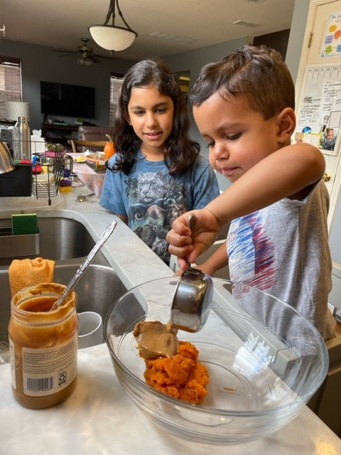

Rock Climbing at Austin Bouldering Project

This is one of my favorie things to do after school, thing is because it is just a fun way to work out even though rrecently I havent been able to go due to personal matters I am itching to return to it and climb with my friends again.
Check out the climbing gymVolenteering with Generation Serve 
This is something I enjoy to do as a family thing, our family likes to go out and do volenteering with this group at least 2 times a month though it is not very often it is a routine we do every month and is enjoyable for each of us.
Check out the volunteering